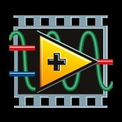
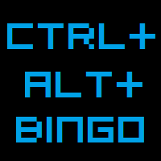

CEC's FRC LabVIEW Guide
Hello World, this is an online step-by-step tutorial on the basics of LabVIEW programming for the First Robotics Competition. This tutorial is intended for future FRC contenders who have little or no experience with LabVIEW or other methods of FRC coding.
What is LabVIEW?
LabVIEW is a software program that allows users to create and deploy code related to control systems. In other words, LabVIEW is a set of tools to help people visually understand software programming, as oppose to standard written code.
LabVIEW Short-Cuts!

Objects and Movement
(Shift-Click): Selects multiple objects; adds object to current selection.
(Arrow Keys): Moves selected objects one pixel at a time.
(Shift-(Arrow-Keys)): Moves selected objects several pixels at a time.
(Shift-Click (Drag)): Moves selected objects in one axis.
(Ctrl-Click (Drag)): Duplicates selected objects.
(Ctrl-Shift-Click (Drag)): Duplicates selected objects and moves them in one axis.
(Shift-Resize): Resizes object while maintaining aspect ratio.
(Ctrl-Resize): Resizes object while maintaining center point.
(Ctrl-Shift-Resize): Resizes selected object while maintaining center point and aspect ratio.
(Ctrl-Drag a Rectangle in Open Spaces): Adds more working space to the front panel or block diagram.
(Ctrl-A): Selects all front panel or block diagram items.
(Ctrl-Shift-A): Performs last alignment operation on objects.
(Ctrl-D): Performs last distribution operation on objects.
(Double-Click Open Spaces): Adds a free label to the front panel or block diagram if automatic tool selection is enabled.
(Ctrl-Mouse Wheel): Scrolls through subdiagrams of a Case, Event, or Stacked Sequence structure.
(Spacebar (Drag)): Disables preset alignment positions when moving labels or captions.
(Ctrl-U): Reroutes all wires and rearranges block diagram objects automatically.
Debugging
(Ctrl-L): Steps into node.
(Ctrl-J): Steps over node.
(Ctrl-L): Steps out of node.
Basic Editing
(Ctrl-Z): Undoes last action.
(Ctrl-Shift-Z): Redoes last action.
(Ctrl-X): Cuts selected objects.
(Ctrl-C): Copies selected objects
(Ctrl-V): Pastes last cut or copied objects.
Navigating LabVIEW
(Ctrl-E): Displays block diagram or front panel windows.
(Ctrl-#): Enables or disables grid alignment.
(Ctrl-/): Maximizes and restores window.
(Ctrl-T): Tiles front panel and block diagram windows.
(Ctrl-F): Finds objects or text.
(Ctrl-G): Searches VIs for next instance of object or text.
(Ctrl-Shift-G): Searches VIs for previous instance of object or text.
(Ctrl-Shift-F): Displays the Search Results window.
(Ctrl-Tab): Cycles through LabVIEW windows.
(Ctrl-Shift-Tab): Cycles through LabVIEW windows in reverse order.
(Ctrl-Shift-N): Displays the Navigation window.
(Ctrl-I): Displays the VI Properties dialog box.
(Ctrl-L): Displays the Error list window.
(Ctrl-Y): Displays the History window.
(Ctrl-Shift-W): Displays the All Windows dialog box.
(Ctrl-Space): Displays the Quick Drop dialog box.
Navigating the VI Hierarchy Window
(Ctrl-D): Redraws the window.
(Ctrl-A): Shows all VIs in the window.
(Ctrl-click VI): Displays the subVIs and other nodes that make up the VI you select in the window.
(Enter)*: Finds next node that matches the search string.
(Shift-Enter)*: Finds previous node that matches the search string.
Note *: After initiating a search by typing in the VI Hierarchy window.
File Operations
(Ctrl-N): Creates a new, blank VI.
(Ctrl-O): Opens an existing VI.
(Ctrl-W): Closes the VI.
(Ctrl-S): Saves the VI.
(Ctrl-Shift-S): Saves all open files.
(Ctrl-P): Prints the window.
(Ctrl-Q): Quits LabVIEW.
Help
(Ctrl-H): Displays the Context Help window.
(Ctrl-Shift-L): Locks the Context Help window.
(Ctlrl-? or F1): Displays the LabVIEW Help.Note: The Ctrl key in these shortcuts corresponds to the Option or
Tools and Palettes
(Ctrl): Switches to next most useful tool.
(Shift): Switches to Positioning tool.
(Ctrl-Shift over open space): Switches to Scrolling tool.
(Spacebar)*: Toggles between two most common tools.
(Shift-Tab)*: Enables automatic tool selection.
(Tab)*: Cycles through four most common tools if you disabled automatic tool selection by clicking the Automatic Tool Selection button. Otherwise, enables automatic tool selection.
(Arrow-Keys): Navigates temporary Controls and Functions palettes.
(Enter): Navigates into a temporary palette.
(Esc): Navigates out of a temporary palette.
(Shift-Sight-Click): Displays a temporary version of the Tools palette at the location of the cursor.
(Note *): If automatic tool selection is disabled.
SubVIs
(Double-Click subVI): Displays subVI front panel.
(Ctrl-Double-Click subVI): Displays subVI block diagram and front panel.
(Drag VI icon to block diagram): Places that VI as a subVI on the block diagram.
(Shift-drag VI icon to block diagram): Places that VI as a subVI on the block diagram with constants wired for controls that have non-default values.
(Ctrl-right-click block diagram and select VI from palette): Opens the front panel of that VI.
Execution
(Ctrl-R): Runs the VI.
(Ctrl - . )*: Stops the VI.
(Ctrl-M): Changes to run or edit mode.
(Ctrl-Run): button Recompiles the current VI.
(Ctrl-Shift-Run): button Recompiles all VIs in memory.
(Ctrl-L)*: Moves key focus inside an array or cluster.
(Ctrl-K)*: Moves key focus outside an array or cluster.
(Tab)*: Navigates the controls or indicators according to tabbing order.
(Shift-Tab)*: Navigates backward through the controls or indicators.
Note *: While the VI is running
Text
(Double-Click): Selects a single word in a string.
(Triple-Click): Selects an entire string.
(Ctrl-J): Moves forward in string by one word.
(Ctrl-I): Moves backward in string by one word.
(Home): Moves to beginning of current line in string.
(End): Moves to end of current line in string.
(Ctrl-Home): Moves to beginning of entire string.
(Ctrl-End): Moves to end of entire string.
(Shift-Enter): Adds new items when entering items in enumerated type controls and constants, ring controls and constants, or Case structures.
(Esc): Cancels current edit in a string.
(Ctrl-Enter): Ends text entry.
(Ctrl - =): Increases the current font size.
(Ctrl - -): Decreases the current font size.
(Ctrl-0): Displays the Font dialog box.
(Ctrl-1)*: Changes to the Application font.
(Ctrl-2)*: Changes to the System font.
(Ctrl-3)*: Changes to the Dialog font.
(Ctrl-4)*: Changes to the current font.
Note *: In the Font dialog box.
Wiring
(Ctrl-B): Removes all broken wires.
(Esc, Right-Click, or Click Terminal): While wiring, cancels a wire you started.
(Single-Click Wire): Selects one segment.
(Double-Click Wire): Selects a branch.
(Triple-Click Wire): Selects entire wire.
(A): While wiring, disables automatic wire routing temporarily.
(Double-Click): While wiring, tacks down wire without connecting it.
(Spacebar): While wiring, switches the direction of a wire between horizontal and vertical.
(Spacebar): While moving objects, toggles automatic wiring.
(Ctrl-Click Input on Function with Two Inputs): Switches the two input wires.
(Shift-click): While wiring, undoes last point where you set a wire.